Géographie et éducation à la citoyenneté
07 / 11 territoires
Le territoire industriel des Grands Lacs
Territoire région · Régional · L'industrialisation et la reconversion
- aménagement
- commercialisation
- concentration
- délocalisation
- développement
- industrialisation
- mondialisation
- multinationale
- pays atelier
- ressource
- La région des Grands Lacs américains et canadiens
- L'aluminium québécois

Mise en contexte
Un territoire industriel s'organise autour d'entreprises de production, de distribution et de services. Il contribue au développement économique d'une région, et ses productions ont des effets sur l'environnement. Ce territoire s'inscrit dans un contexte économique mondial marqué par la délocalisation des industries, et il importe pour une région industrielle de conserver sa place dans ce contexte. Sur cette page, il sera question de la région des Grands Lacs canadiens et américains, puis de l'aluminium québécois, qui montre le même enjeu à une autre échelle.
Concepts à l'étude
- Aménagement : l'ensemble des interventions par lesquelles on organise un territoire. Ici, ce sont les ports, les canaux, les voies ferrées, les autoroutes et les parcs industriels.
- Commercialisation : le fait de transformer quelque chose en produit que l'on vend. Une usine ne fabrique pas pour elle-même, elle fabrique pour un marché.
- Concentration : un regroupement important d'éléments dans un même espace géographique. Autour des Grands Lacs, ce sont les usines, les habitants et les voies de transport qui se concentrent.
- Délocalisation : le transfert par une entreprise de ses activités, de ses capitaux et de ses emplois vers une région du monde qui lui offre un avantage concurrentiel.
- Développement : l'amélioration des conditions de vie d'une population, que l'activité économique rend possible mais ne garantit pas.
- Industrialisation : l'implantation progressive d'usines sur un territoire donné et les transformations sociales qui l'accompagnent.
- Mondialisation : la libre circulation des marchandises, des capitaux, des services, des personnes, des techniques et de l'information à l'échelle de la planète.
- Multinationale : une entreprise qui contrôle des filiales dans plusieurs pays différents de celui où se trouve son siège social.
- Pays atelier : un pays qui accueille des usines de multinationales étrangères, surtout pour la main-d'oeuvre à bas salaire qu'il offre, et qui fabrique pour l'exportation plutôt que pour son marché intérieur.
- Ressource : ce qu'un territoire possède et que l'on peut mettre en valeur. Ici, ce sont le fer, le charbon, l'eau et la force de travail.
Qu'est-ce qui attire une industrie
Une industrie ne s'installe pas au hasard. Elle choisit une région plutôt qu'une autre en fonction de ce qu'on appelle les facteurs de localisation. Il y en a six, et une région devient un territoire industriel quand plusieurs d'entre eux se rencontrent au même endroit.
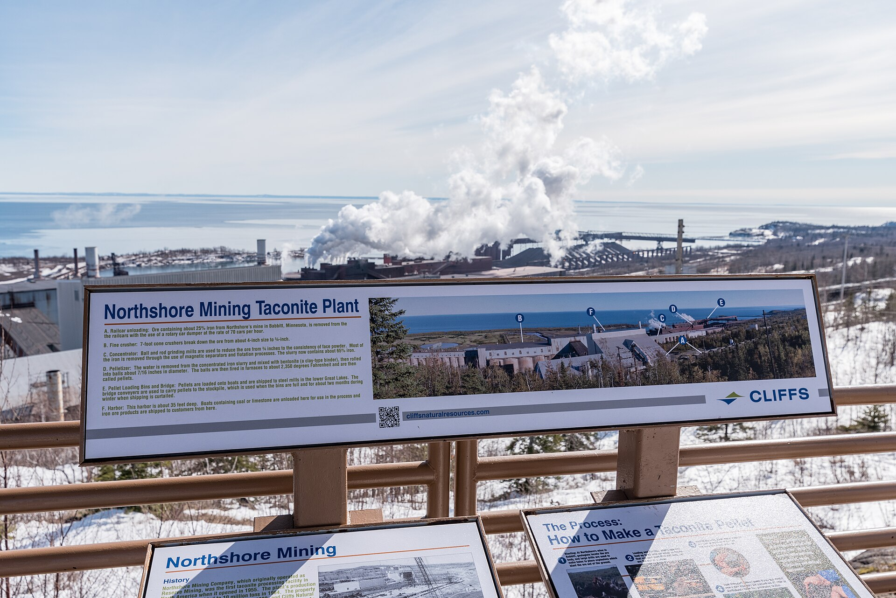
Source
Tony Webster from Minneapolis, Minnesota, United States, Cliffs Northshore Mining Taconite Plant Viewpoint, Silver Bay, Minnesota (39057179320), Wikimedia Commons. Licence : Creative Commons BY 2.0.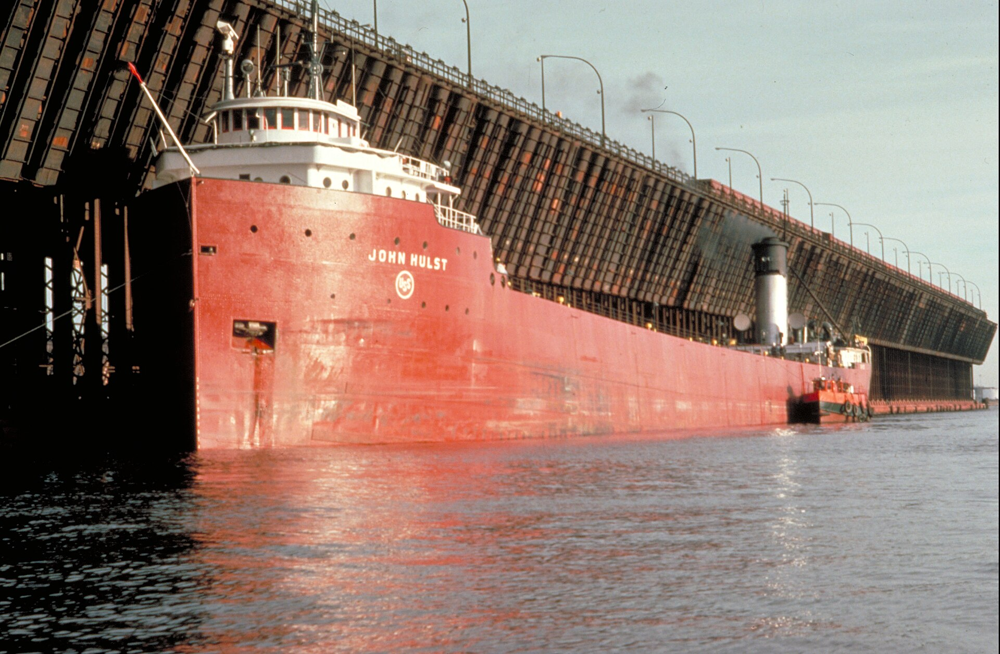
Source
Unknown author Unknown author, USEPA GL collection 136 LakerAtDuluthOreDock, Wikimedia Commons. Licence : Domaine public.Les trois secteurs d'activité
Les trois secteurs d'activité
Choisis un secteur
Toutes les activités économiques ne se ressemblent pas. On les range en trois secteurs, selon ce qu'elles font de la matière : l'extraire, la transformer ou rendre un service. Un territoire industriel se reconnaît à la place qu'y occupe le secteur secondaire.
La mondialisation et les multinationales
Les échanges commerciaux se sont globalisés : ils se produisent aujourd'hui entre toutes les régions de la planète. Il est possible de consommer un produit extrait, transformé et assemblé à l'autre bout du monde. Les multinationales utilisent les facteurs de localisation au maximum. Elles implantent leurs usines là où la main-d'oeuvre coûte le moins cher, là où les avantages fiscaux sont les plus généreux ou là où la ressource se trouve. C'est pourquoi beaucoup de produits vendus au Québec ont été fabriqués en Asie ou en Amérique du Sud, même quand l'entreprise qui les vend est américaine ou européenne.
Source : Alloprof
Un exemple : le vêtement
Le textile est l'exemple le plus net du pays atelier. Une chemise peut être cousue dans un pays où le salaire quotidien vaut le prix de son étiquette, puis vendue à l'autre bout du monde. La fast fashion, cette mode jetable qui se renouvelle en permanence, a fait exploser les quantités : les consommateurs achètent nettement plus de vêtements qu'il y a quinze ans. De la fabrication des matières premières au transport, en passant par le lavage et le recyclage, le cycle de vie d'un vêtement produit une pollution considérable.
Source : Joséfa Lopez et Elisa Bellanger, Le Monde
La route d'un t-shirt, du champ de coton au magasin
Suis un t-shirt, choisis un produit ou un lieu
- Route (camions)
- Route de mer (navires)
- Lieu de la chaîne
- Grand producteur
- 1 000 km
Un t-shirt qui fait le tour du monde
Le coton d'un t-shirt vendu à Montréal a souvent poussé au Brésil. Le t-shirt a peut-être été fabriqué au Bangladesh. Entre les deux, il a traversé plusieurs océans dans des conteneurs.
Chaque étape se fait là où elle coûte le moins cher : c'est la mondialisation. Les champs, les usines, les ports et les routes de mer forment une longue chaîne, de la plante jusqu'au magasin.
- Suis un t-shirt, étape par étape, du champ de coton au magasin.
- Choisis un produit pour voir d'où il vient et où il va.
- Choisis un lieu pour découvrir son rôle dans la chaîne.
Le savais-tu? En septembre 2026, le OOCL Portugal a traversé le canal de Suez. Ce porte-conteneurs peut transporter plus de 24 000 conteneurs de 6 mètres. Mis bout à bout, ils formeraient une file de plus de 140 km.
Le coton
D'où vient-il?Le Brésil est devenu le premier exportateur de coton du monde : 30,5 % des exportations mondiales en 2024-2025. Les États-Unis suivent, avec 25,8 %. L'Inde et la Chine en produisent beaucoup, mais l'utilisent surtout dans leurs propres usines. Le Bangladesh en achète aussi en Inde et en Afrique de l'Ouest.
À quoi sert-il?Ses fibres sont filées, puis tricotées ou tissées : on en fait des t-shirts, des jeans, des serviettes. En 2024-2025, le Bangladesh est devenu le plus grand importateur de coton du monde. Le Brésil est son premier fournisseur : 23 % du coton acheté par le Bangladesh cette année-là.
Son cheminLe savais-tu? Le Bangladesh cultive très peu de coton. Ses usines achètent presque tout le leur à l'étranger, parfois à l'autre bout du monde.
Les vêtements
D'où viennent-ils?La Chine fournit 29,6 % des exportations mondiales de vêtements (2024), devant le Bangladesh (6,9 %), le Viet Nam (6,1 %), la Türkiye (3,2 %) et l'Inde (2,9 %). Dans ces pays, la main-d'œuvre coûte beaucoup moins cher qu'au Canada.
Où vont-ils?Des marques du monde entier font fabriquer leurs vêtements dans ces pays ateliers, puis les vendent dans leurs magasins. Le chemin le plus court entre le Bangladesh et Montréal passe par le canal de Suez. L'autre fait le tour de l'Afrique.
Le chemin le plus courtLe savais-tu? Regarde l'étiquette d'un de tes vêtements : dans quel pays a-t-il été fabriqué?
Le champ de coton
Au centre du Brésil, le Mato Grosso est couvert d'immenses fermes. On y cultive du soja, du maïs et du coton sur des milliers d'hectares. La récolte se fait à la machine. Une autre machine sépare ensuite les fibres blanches des graines (c'est l'égrenage), puis on presse les fibres en grosses balles.
Ce qui passe iciEn chiffres : L'État du Mato Grosso produit à lui seul environ 70 % du coton brésilien.
Le port du coton brésilien
Santos, près de São Paulo, est le plus grand port du Brésil. Les balles de coton y arrivent en camion ou en train, après environ cinq jours de route depuis les fermes du Mato Grosso. On les charge dans des conteneurs : de grandes boîtes de métal toutes de la même taille, faciles à empiler sur un navire.
Ce qui passe iciEn chiffres : Ces dernières années, environ 95 % du coton exporté par le Brésil est parti du port de Santos.
Le grand port du Bangladesh
Chattogram, qu'on appelait autrefois Chittagong, est bâti sur la rivière Karnaphuli, près du golfe du Bengale. Presque tout ce que le Bangladesh achète ou vend par la mer y passe. Mais le port est peu profond : un navire qui s'enfonce de plus de 9,5 mètres dans l'eau ne peut pas y accoster. Les plus grands porte-conteneurs n'y viennent donc pas.
Ce qui passe iciEn chiffres : Chattogram traite plus de 90 % du commerce maritime du Bangladesh.
La capitale du vêtement
Dhaka est la capitale du Bangladesh. Autour d'elle, des milliers d'usines transforment le coton en fil, le fil en tissu et le tissu en vêtements. Plus de 4,4 millions de personnes travaillent dans l'industrie du vêtement au Bangladesh, dont 70 % de femmes. Les vêtements font plus de 80 % des exportations du pays.
Ce qui passe iciEn chiffres : Le Bangladesh est le deuxième exportateur de vêtements du monde, après la Chine.
Le drame du Rana Plaza
Savar est une ville de la banlieue de Dhaka. Le 24 avril 2013, le Rana Plaza s'y effondre. Cet immeuble de huit étages abritait cinq usines de vêtements. La veille, de larges fissures étaient apparues dans les murs, mais les patrons des usines ont obligé les ouvrières et les ouvriers à revenir travailler.
Ce qui passe iciEn chiffres : Le Rana Plaza s'est effondré le 24 avril 2013 : 1 134 morts et environ 2 500 blessés.
Le port de transbordement
Colombo est la plus grande ville du Sri Lanka. Son port est profond : les plus grands porte-conteneurs du monde peuvent y accoster. De petits navires, les caboteurs, y apportent les conteneurs de Chattogram. Des grues les déposent ensuite sur un grand navire qui part vers l'Europe ou l'Amérique. C'est le transbordement.
Ce qui passe iciEn chiffres : Environ 40 % des exportations du Bangladesh passent par le port de Colombo.
Un carrefour des océans
Singapour est une ville-État au bout de la péninsule malaise, au bord du détroit de Malacca. Ce passage étroit relie l'océan Indien à la mer de Chine. Le port de Singapour est l'un des plus grands ports à conteneurs du monde. Comme à Colombo, beaucoup de conteneurs du Bangladesh y changent de navire.
Ce qui passe iciEn chiffres : Les conteneurs de Chattogram changent de navire dans quatre grands ports : Colombo, Singapour, Port Klang et Tanjung Pelepas (ces deux derniers en Malaisie).
La porte de la mer Rouge
Ce détroit sépare le Yémen, en Asie, de Djibouti et de l'Érythrée, en Afrique. Tous les navires qui passent par le canal de Suez doivent le franchir. Depuis la fin de 2023, des rebelles houthis du Yémen y ont attaqué des navires de commerce. La plupart des porte-conteneurs ont alors fait le détour par le cap de Bonne-Espérance.
Ce qui passe iciEn chiffres : Le détroit mesure environ 30 km de large.
Le raccourci entre l'Asie et l'Europe
Ouvert en 1869, le canal de Suez traverse l'Égypte. Il relie la mer Rouge à la mer Méditerranée. Grâce à lui, les navires qui vont d'Asie vers l'Europe ou l'Amérique du Nord n'ont pas à faire le tour de l'Afrique. En 2026, après plus de deux ans de détours, des compagnies y reviennent peu à peu.
Ce qui passe iciEn chiffres : Le canal mesure 193 km de long. Il n'a aucune écluse.
Le détour par l'Afrique
Le cap de Bonne-Espérance se trouve au sud-ouest de l'Afrique du Sud. Avant 1869, tous les navires qui allaient d'Europe en Asie le contournaient. Depuis 2024, beaucoup de porte-conteneurs y sont revenus pour éviter la mer Rouge. Le coton du Brésil, lui, passe par là de toute façon : c'est son chemin le plus court vers l'océan Indien.
Ce qui passe iciEn chiffres : Contourner l'Afrique ajoute de 10 à 14 jours au voyage d'un navire entre l'Asie et l'Europe.
Le port d'arrivée
Après la traversée de l'Atlantique, les navires entrent dans le golfe du Saint-Laurent et remontent le fleuve jusqu'au port de Montréal. Les conteneurs y sont déchargés, puis repartent en camion ou en train vers des entrepôts. De là, les vêtements sont livrés aux magasins.
Ce qui passe iciEn chiffres : En amont de Montréal, les écluses de la Voie maritime du Saint-Laurent sont trop petites pour les grands porte-conteneurs.
Le coton pousse au Brésil
- Matière première
Notre t-shirt commence dans un champ du Mato Grosso, au centre du Brésil. Le coton est une plante : ses graines sont entourées de fibres blanches. Après la récolte, une machine sépare les fibres des graines, puis on presse les fibres en grosses balles.
En camion jusqu'à Santos
- Transport
Les balles partent en camion vers le port de Santos, à plus de 1 500 km. Environ 95 % du coton exporté par le Brésil passe par ce port. On y charge les balles dans des conteneurs.
Deux océans à traverser
- Transport
Un navire emporte les conteneurs vers l'Asie. Il contourne l'Afrique par le cap de Bonne-Espérance, puis traverse l'océan Indien. À Colombo, au Sri Lanka, les conteneurs passent sur un plus petit navire : le port de Chattogram, au Bangladesh, est trop peu profond pour les grands porte-conteneurs. En 2024-2025, le Bangladesh est devenu le plus grand importateur de coton du monde.
Le coton devient du fil
- Usine
- Main-d'œuvre
En camion, le coton gagne les usines de la région de Dhaka, la capitale. Dans une filature, les fibres sont nettoyées, démêlées, étirées, puis tordues ensemble : elles deviennent un fil, enroulé sur des bobines.
Le fil devient du tissu
- Usine
- Main-d'œuvre
Un t-shirt n'est pas fait de tissu tissé comme une chemise, mais de tissu tricoté, le jersey : c'est ce qui le rend souple. De grandes machines circulaires tricotent le fil en un long tube de tissu. Le tissu est ensuite lavé, blanchi et teint dans de grandes cuves. Si l'usine rejette ses eaux sans les traiter, les produits chimiques polluent les rivières.
La confection
- Main-d'œuvre
Le tissu est coupé selon un patron, puis des couturières assemblent les morceaux à la machine à coudre. Chaque personne fait souvent une seule opération, des centaines de fois par jour. En décembre 2023, le salaire minimum dans le vêtement a été fixé à 12 500 takas par mois (environ 113 dollars américains à l'époque). À l'automne 2026, des milliers d'ouvrières et d'ouvriers manifestent pour obtenir 30 000 takas. Un nouveau salaire minimum doit s'appliquer en janvier 2027.
L'effondrement du Rana Plaza
- Risque
Le 24 avril 2013, à Savar, près de Dhaka, le Rana Plaza s'effondre : 1 134 morts et environ 2 500 blessés. La veille, des fissures étaient apparues, mais les patrons ont obligé le personnel à revenir. On y fabriquait des vêtements pour des marques occidentales, dont Joe Fresh, la marque des magasins Loblaw au Canada. Le 15 mai 2013, des marques et des syndicats ont signé un accord qui oblige à inspecter la sécurité des usines du Bangladesh.
Un petit navire, puis un grand
- Transport
Les t-shirts, pliés et emballés, retournent en camion à Chattogram. Un caboteur, un petit porte-conteneurs, les emporte jusqu'à Colombo. Là, des grues déposent leur conteneur sur un immense navire. Environ 40 % des exportations du Bangladesh passent par Colombo. Les autres changent de navire surtout à Singapour ou en Malaisie.
Suez ou le cap?
- Transport
- Risque
Le navire traverse la mer d'Arabie, franchit le détroit de Bab-el-Mandeb, remonte la mer Rouge et passe le canal de Suez : c'est le chemin le plus court. Mais depuis la fin de 2023, des rebelles houthis du Yémen attaquent des navires en mer Rouge. La plupart des porte-conteneurs ont alors fait le détour par l'Afrique (en pointillé sur la carte). En 2026, des compagnies reviennent peu à peu à Suez, mais la région reste dangereuse.
- Par le canal de SuezEnviron 16 000 km de Colombo à Montréal.
- Par le cap de Bonne-EspéranceEnviron 21 400 km : 5 500 km de plus.
Jusqu'à Montréal
- Transport
- Magasin
Le navire traverse la Méditerranée, passe le détroit de Gibraltar, puis franchit l'océan Atlantique. Il entre dans le golfe du Saint-Laurent et remonte le fleuve jusqu'au port de Montréal. Les conteneurs partent ensuite en camion vers les entrepôts, puis vers les magasins. Le t-shirt est enfin en vente.
Où va l'argent du t-shirt?
37 400 kmDu champ au port de Montréal, notre t-shirt a parcouru environ 37 400 km : presque le tour de la Terre, qui mesure 40 000 km. Par le cap de Bonne-Espérance, il aurait fait 5 500 km de plus.
Les marques paient en moyenne environ 2 dollars américains pour un t-shirt de coton fabriqué au Bangladesh (prix à l'importation dans l'Union européenne, 2025). En tenant compte de la hausse des prix, c'est environ la moitié de ce qu'elles payaient il y a 25 ans.
Chaque étape de la chaîne se fait là où elle coûte le moins cher. C'est ce qui rend les vêtements si bon marché dans nos magasins.
À ton avis, qui gagne le plus dans la fabrication d'un t-shirt? Qui en paie le prix?
Coton : département de l'Agriculture des États-Unis (USDA) et CEPEA (2025); Abrapa et USDA (port de Santos). Ports : The Business Standard et UNB (Chattogram, 2025); ministère des Affaires étrangères du Sri Lanka (Colombo); The Daily Star (ports de transbordement). Vêtements : Organisation mondiale du commerce (OMC), données de 2024. Salaire minimum : bdnews24.com (2023 et 2026). Rana Plaza et Accord de 2013 : Wikipédia. Prix du t-shirt : Clean Clothes Campaign (estimation reprise par Statista, 2025); Public Eye et Clean Clothes Campaign (mai 2026). Mer Rouge et canal de Suez : gCaptain (2026). Distances mesurées le long des tracés simplifiés de la carte : un t-shirt donné peut suivre un autre parcours. Fond de carte : Natural Earth, domaine public.
Le transport, angle mort de la mondialisation
Plus les usines s'éloignent des consommateurs, plus les marchandises voyagent. Or le transport maritime fonctionne au fioul lourd, l'un des carburants les plus sales qui soient : un résidu visqueux qui reste une fois raffinés l'essence, le naphta et le diesel. Seul l'asphalte des routes est plus épais. Une chemise bon marché coûte donc plus cher que son prix, mais la différence n'apparaît sur aucune étiquette.
Situer les Grands Lacs
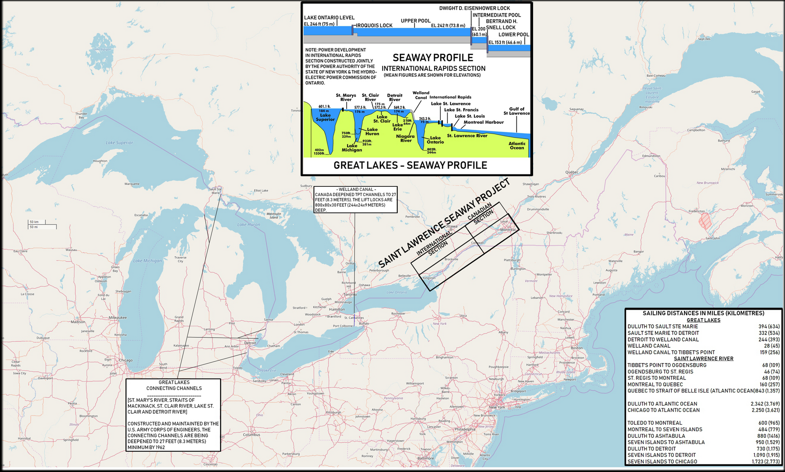
Source
Cobatfor, Great Lakes and St. Lawrence Seaway map 1959, Wikimedia Commons. Licence : Creative Commons BY-SA 3.0.Les Grands Lacs forment le plus important réseau de lacs du Canada. Situés au sud-est du pays, ils s'étendent aussi aux États-Unis et sont traversés par la frontière internationale. Avec un volume total de 22 810 kilomètres cubes, ils emmagasinent une part considérable de l'eau douce de surface de la planète, souvent estimée à un cinquième. La région compte en plus une multitude de lacs plus petits, de cours d'eau et quelque 35 000 îles.
Le lac Supérieur est le plus grand des cinq, avec 83 300 kilomètres carrés, ce qui en fait le deuxième lac de la planète après la mer Caspienne. Le lac Huron suit avec 59 800 kilomètres carrés, puis le lac Michigan, le seul à se trouver entièrement en territoire américain. Le lac Érié et le lac Ontario ferment la marche.
Une concentration humaine sans équivalent
Environ 8,5 millions de Canadiens vivent dans le bassin des Grands Lacs, notamment à Toronto, Kingston, Sarnia, Hamilton et Thunder Bay, et 30,7 millions d'Américains dans sa partie sud, à Milwaukee, Chicago, Détroit, Cleveland et Buffalo. Cela fait environ 40 millions de personnes, soit un peu plus du quart de la population canadienne et un peu plus du dixième de la population américaine. C'est la région la plus densément peuplée d'Amérique du Nord.
Source : Alloprof
Pourquoi les industries ont choisi cette région
La géographie et la voie maritime
Le réseau Grands Lacs et Voie maritime du Saint-Laurent est une voie navigable profonde qui s'étend sur 3 700 kilomètres entre l'océan Atlantique et la tête des Grands Lacs, au coeur du continent. La portion appelée Voie maritime du Saint-Laurent va de Montréal au milieu du lac Érié. Considérée comme l'une des grandes réalisations techniques du 20e siècle, elle compte treize écluses canadiennes et deux écluses américaines.
Des navires venus du monde entier peuvent ainsi pénétrer au centre de l'Amérique du Nord. Deux ouvrages rendent la chose possible : le canal Welland, qui contourne les chutes du Niagara entre le lac Ontario et le lac Érié et les écluses de Sault-Sainte-Marie, entre le lac Huron et le lac Supérieur.
Source : Corporation de gestion de la Voie maritime du Saint-Laurent
La voie maritime du Saint-Laurent, écluse par écluse
Touche une écluse ou fais monter un navire
Dénivellations, altitudes (Montréal 6,1 m, lac Ontario 75,0 m, lac Érié 174,3 m) et distances : Corporation de gestion de la Voie maritime du Saint-Laurent, « The St. Lawrence Seaway, Montreal to Lake Ontario » et page des écluses et canaux. Montée totale, ouverture et trafic : L'Encyclopédie canadienne, « Voie maritime du Saint-Laurent ». Écluses du canal Welland (14,2 m en moyenne) : Great Lakes Sailing et Université Brock. Durée d'une éclusée : St. Lawrence Seaway Development Corporation (États-Unis). Le profil n'est pas à l'échelle horizontale; les niveaux entre deux écluses relient les altitudes connues et varient avec les saisons. Carte : Natural Earth (domaine public) et © les contributeurs d'OpenStreetMap, licence ODbL, pour le tracé du fleuve.
Suis un navire de Montréal jusqu'au lac Érié. Repère la section où il monte le plus, puis active la carte pour voir où se trouvent les écluses et les installations qui profitent de la voie.
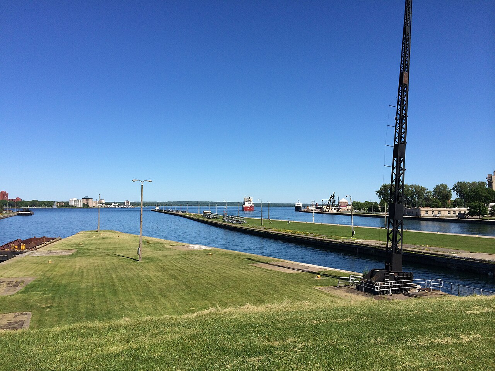
Source
NOAA Great Lakes Environmental Research Laboratory, Freighter approaching the Soo Locks (14659035049), Wikimedia Commons. Licence : Creative Commons BY-SA 2.0.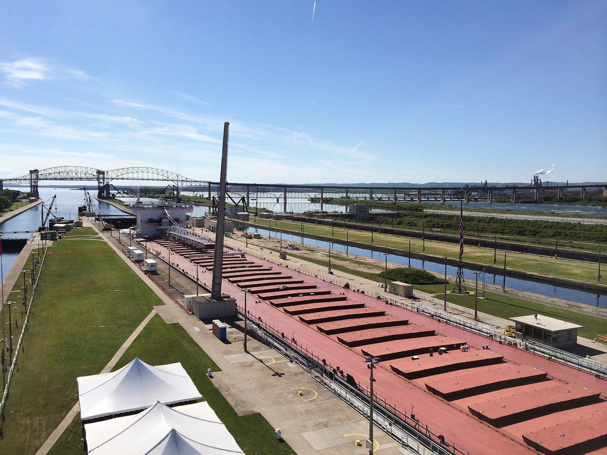
Source
NOAA Great Lakes Environmental Research Laboratory, Freighter travelling through the Soo Locks (14658981350), Wikimedia Commons. Licence : Creative Commons BY-SA 2.0.Source
U.S. Army Corps of Engineers, photographer not specified or unknown, Soo Locks 19th Century, Wikimedia Commons. Licence : Domaine public.Source
Balcer, Welland Canal Lock 1 Port Weller, Wikimedia Commons. Licence : Creative Commons BY-SA 3.0.La main-d'oeuvre
Quarante millions d'habitants, cela fournit aux industries une main-d'oeuvre nombreuse. Les nombreuses universités de la région, des deux côtés de la frontière, la rendent aussi qualifiée. Une entreprise qui s'installe ici trouve à la fois des ouvriers spécialisés et les écoles pour en former d'autres.
Les infrastructures
Ports, chemins de fer, autoroutes et aéroports se sont accumulés depuis un siècle et demi. Le port de Hamilton, sur le lac Ontario, est le grand port industriel canadien de la région, celui par lequel transitent le minerai de fer et l'acier. Toronto, Chicago, Cleveland et Duluth ont chacun leurs installations portuaires.
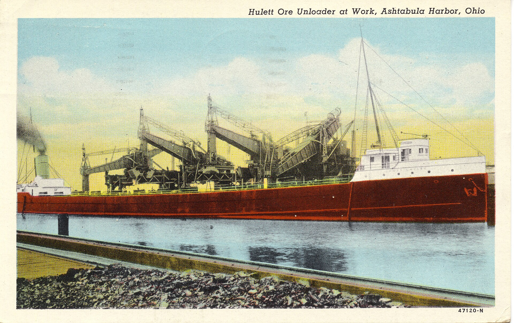
Source
Miami U. Libraries - Digital Collections, Hulett Ore Unloader at Work (14090804785), Wikimedia Commons. Licence : No restrictions.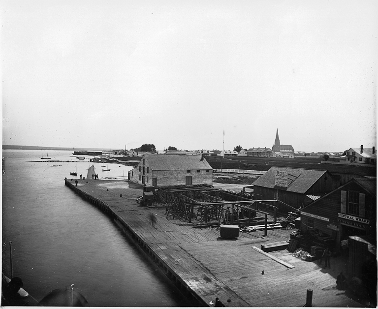
Source
Musée McCord Museum, Harbour, Sault St. Marie, ON, 1884 (2918688901), Wikimedia Commons. Licence : No restrictions.L'aide gouvernementale
Les trois paliers de gouvernement aident les entreprises à s'installer : subventions, allègements fiscaux, accords de libre-échange qui facilitent l'importation et l'exportation, formations adaptées à la demande des industries. En contrepartie, les entreprises paient les impôts canadiens ou américains et doivent respecter les normes environnementales des deux pays. Cette dernière exigence n'est pas un détail, dans une région qui détient une telle réserve d'eau douce.
L'automobile, moteur et fragilité
Source
The Outing Publishing Company, Packard factory plant circa 1904, Wikimedia Commons. Licence : Domaine public.L'industrie qui a le plus profité du développement de la région est l'automobile. C'est autour du lac Michigan et du détroit de Détroit que les grands constructeurs américains se sont installés : Ford, General Motors et Chrysler, qu'on a appelés les Big Three. Les mines de fer des environs expliquent ce choix, tout comme la navigation qui amenait le minerai à bas prix.
Ce que pèse vraiment l'automobile
L'ensemble de la filière automobile représente environ 1 000 milliards de dollars par année pour l'économie américaine, soit près de 5 % du produit intérieur brut, et emploie directement près de 10 millions de personnes. Les trois constructeurs historiques comptent à eux seuls pour environ 3 % du produit intérieur brut, et exploitent 60 % des usines d'assemblage du pays.
Source : Alliance pour l'innovation automobile
Le déclin, puis les tarifs
À partir des années 1970, les voitures japonaises, plus petites et moins gourmandes en essence, prennent des parts de marché. Les coûts de production des Big Three deviennent trop élevés pour suivre. Des usines ferment, d'autres se déplacent. Mais la première délocalisation n'a pas traversé l'océan : elle est descendue vers le sud des États-Unis. Les constructeurs japonais, coréens et allemands ont bâti leurs usines américaines dans le sud-est, où les salaires sont plus bas et la syndicalisation plus faible. Cette production du sud-est représente environ 15 % du total national.
Source
Alecothegecko, Abandoned Packard Plant in Detroit, Michigan, Wikimedia Commons. Licence : Creative Commons BY-SA 4.0.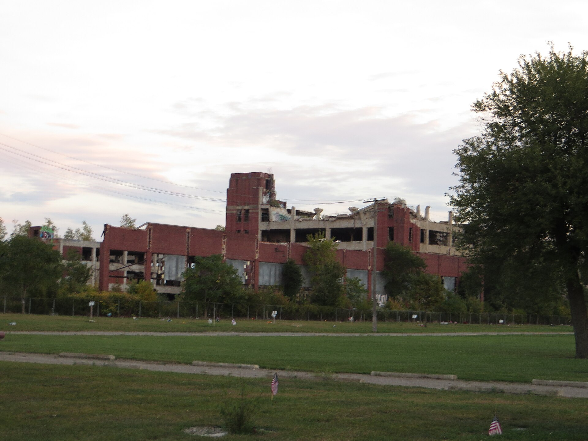
Source
Ken Lund from Reno, Nevada, USA, Dilapidated Packard Plant, Detroit, Michigan (21559267280), Wikimedia Commons. Licence : Creative Commons BY-SA 2.0.Le territoire d'hier et celui d'aujourd'hui
Les Grands Lacs, avant et maintenant
Touche un côté pour l'afficher
C'est la population de la ville de Détroit à son sommet, en 1950. Elle est alors la quatrième ville des États-Unis, portée par l'automobile.
La ville a perdu près des deux tiers de sa population. Elle s'est placée sous la protection de la loi sur les faillites en 2013, avec une dette de 18,5 milliards de dollars.
Ce qui changeAttention au piège. L'aire métropolitaine de Détroit, elle, n'a jamais été aussi peuplée : 6,3 millions d'habitants en 2020. Ce n'est pas la région qui s'est vidée, c'est le centre qui s'est vidé vers ses banlieues.
Emplois manufacturiers dans la seule ville de Détroit en 1960. La moitié des emplois automobiles américains se trouvaient alors dans la ceinture manufacturière.
Douze fois moins. Les usines ne sont pas toutes disparues, mais elles emploient beaucoup moins de monde pour produire autant, grâce à l'automatisation.
Ce qui changeUne usine qui reste ouverte ne garantit plus les emplois d'avant. Produire davantage avec moins de personnes est le changement le plus profond du siècle.
General Motors, Ford et Chrysler se partageaient le marché américain. Quatre-vingts pour cent de leurs usines se trouvaient au Michigan, en Ohio et en Indiana.
Les constructeurs japonais, coréens et allemands produisent aussi aux États-Unis, surtout dans le sud-est, où les salaires sont plus bas et la syndicalisation plus faible.
Ce qui changeLa première délocalisation n'a pas traversé l'océan : elle est descendue vers le sud des États-Unis, à quelques heures de route.
Les mines du lac Supérieur, le charbon de l'Appalache et la navigation sur les lacs rendaient l'acier bon marché sur place.
La filière du véhicule électrique cherche de l'électricité abondante, des minéraux critiques et des usines de batteries. Les centres de données aussi.
Ce qui changeLes six facteurs de localisation n'ont pas changé, mais ce qu'ils désignent a changé. La matière première d'hier était le minerai, celle d'aujourd'hui est le lithium.
À partir des années 1970, les voitures japonaises, plus petites et moins gourmandes, prennent des parts de marché. Les coûts de production américains sont trop élevés.
Depuis 2025, des tarifs douaniers de 25 % sur les véhicules et de 50 % sur l'acier et l'aluminium redécoupent un marché qui était devenu continental.
Ce qui changeC'est un renversement complet. Pendant cinquante ans, l'enjeu était d'ouvrir les frontières pour produire moins cher. Aujourd'hui, ce sont les frontières qui décident.
Dans les années 1960 et 1970, le lac Érié est si pollué qu'on le dit mort. Une rivière qui s'y jette, la Cuyahoga, prend feu à plusieurs reprises.
Les rejets industriels ont beaucoup diminué, mais les engrais agricoles nourrissent des algues toxiques et les microplastiques s'accumulent dans les cinq lacs.
Ce qui changeLa pollution n'a pas disparu, elle a changé de source. On voyait autrefois d'où elle venait, aujourd'hui elle arrive de partout à la fois.
Touche un côté pour l'afficher, un critère à la fois.
Comparer la région à son âge d'or industriel et à aujourd'hui permet de voir ce qui a changé, mais aussi ce qui n'a pas changé. Parcours les six critères avant de répondre.
Les enjeux environnementaux
Les industries de la région sont polluantes, et elles se trouvent au bord de la plus grande réserve d'eau douce de surface du continent. C'est la contradiction centrale de ce territoire. Le lac Érié est le plus touché : peu profond, entouré de terres agricoles, il reçoit les engrais qui nourrissent chaque été des algues bleues toxiques. Dans les années 1960 et 1970, on le disait mort. Les rejets industriels ont depuis beaucoup diminué, mais la pollution a changé de source : elle vient maintenant des champs et des microplastiques, et non plus seulement des tuyaux d'usine.
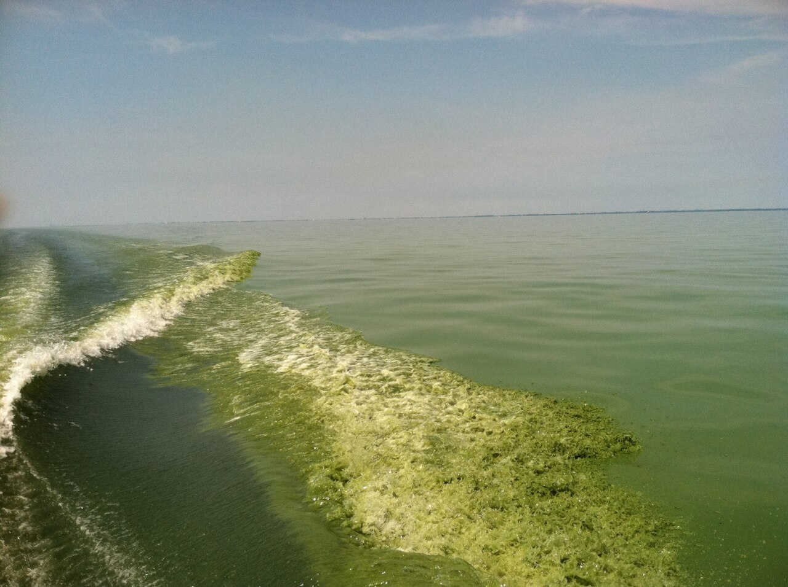
Source
NOAA Great Lakes Environmental Research Laboratory, Algal bloom in Lake Erie (8740853887), Wikimedia Commons. Licence : Creative Commons BY-SA 2.0.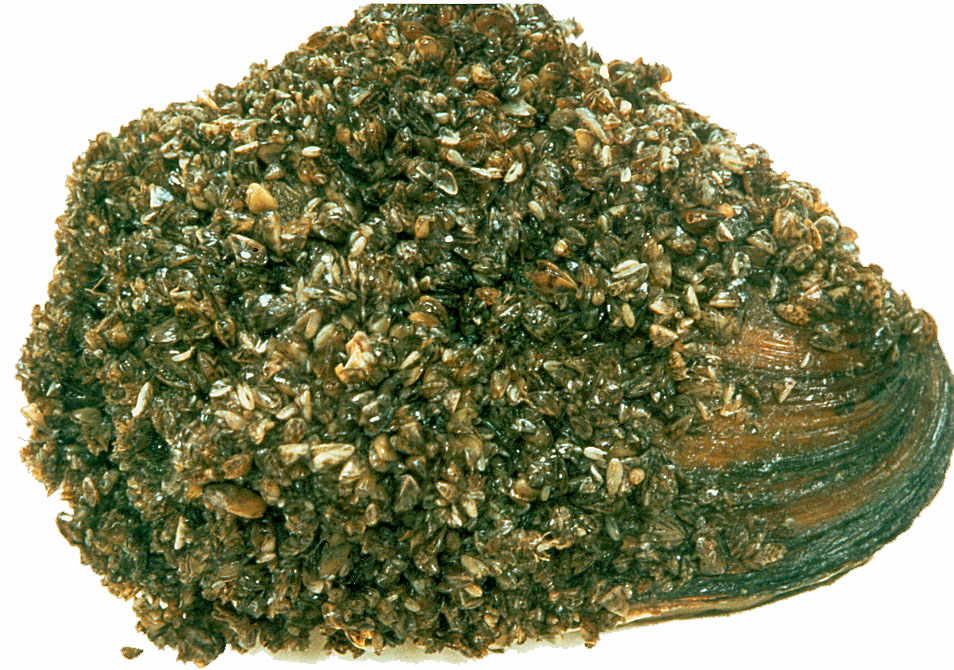
Source
NOAA Great Lakes Environmental Research Laboratory, Native Great Lakes unionid mussel encrusted with zebra mussels (8741976384), Wikimedia Commons. Licence : Creative Commons BY-SA 2.0.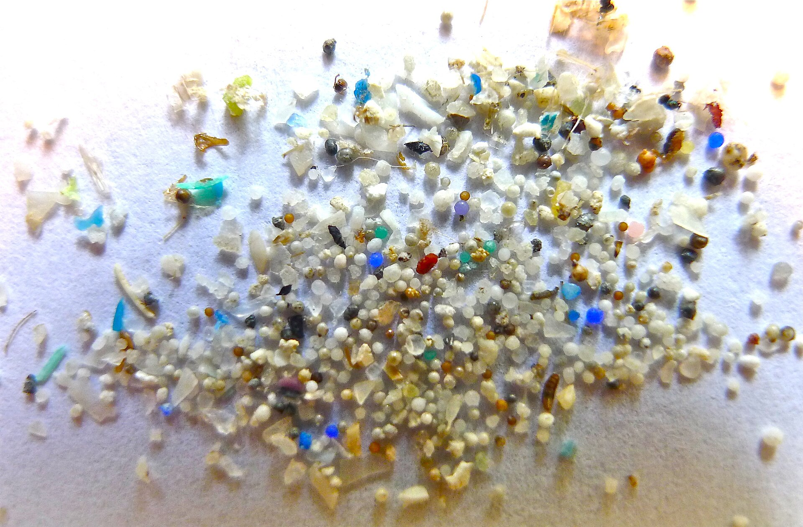
Source
Oregon State University, Microplastic, Wikimedia Commons. Licence : Creative Commons BY-SA 2.0.Une région industrielle du Québec : l'aluminium
Le Québec possède son propre territoire industriel, plus petit mais bâti sur la même logique. Huit des neuf alumineries canadiennes s'y trouvent, exploitées par trois multinationales : Rio Tinto, Alcoa et Alouette. Elles emploient plus de 7 700 personnes au Québec, dans des régions éloignées des grands centres : le Saguenay-Lac-Saint-Jean, la Côte-Nord et le Centre-du-Québec.
Le facteur de localisation décisif est ici l'électricité. Fondre l'aluminium demande d'énormes quantités de courant, et c'est l'hydroélectricité bon marché qui a fait venir ces usines. Le premier lingot d'aluminium canadien a été coulé à Shawinigan en 1901, à côté d'une centrale. L'aluminerie Alouette, à Sept-Îles, n'a été rendue possible que par la production d'électricité de Churchill Falls.
Une industrie tournée vers un seul client
Le secteur québécois de l'aluminium envoie environ 96 % de ses exportations étrangères aux États-Unis. C'est une dépendance extrême, et les tarifs de 50 % imposés en 2025 l'ont mise à l'épreuve. La réaction est instructive. Plutôt que de réduire la production, l'industrie a redirigé une partie du métal vers l'Europe : les expéditions y sont passées de 99 907 tonnes en 2024 à 505 430 tonnes en 2025, soit cinq fois plus. Les exportations métallurgiques québécoises ont tout de même chuté de 36 % en volume entre février 2025 et février 2026, mais les alumineries ont continué de tourner à 95 % de leur capacité, sans mise à pied.
Source : Association de l'aluminium du Canada et Institut du Québec